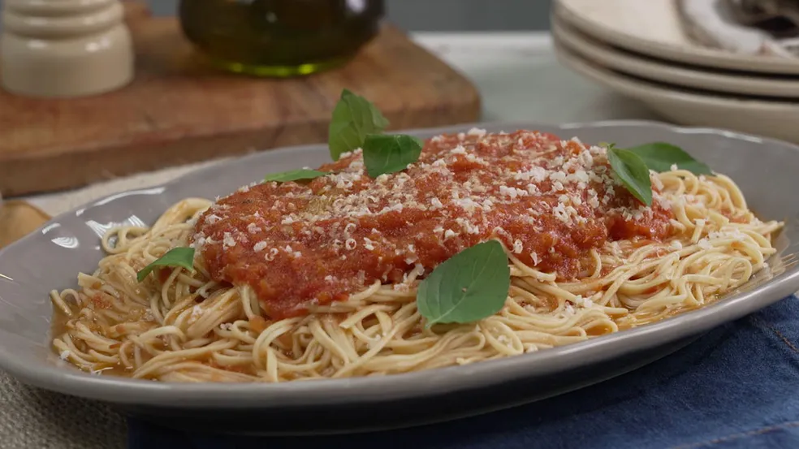

Espaguete ao pomodoro

O espaguete ao pomodoro é uma receita fácil para quem gosta de massa fresca. Você vai aprender a todo o preparo do macarrão. Confira!
O espaguete ao pomodoro é uma receita clássica italiana que combina com o almoço ou jantar. Para quem gosta de fazer o prato do zero, aprenda como fazer a massa fresca com farinha de trigo, ovos e sal.
O molho pomodoro é feito de forma fácil no forno. A receita é fácil, com ingredientes simples e surpreende pelo sabor. Confira o passo a passo completo e saiba como fazer espaguete ao pomodoro!
Ingredientes
Molho
- 12 tomates cortados
- 1 cebola cortada
- 6 dentes de alho
- 1 bouquet garni (alecrim e tomilho)
- Sal a gosto
- Pimenta-do-reino a gosto
- 100 mililitros de azeite
Massa
- 400 gramas de farinha de trigo
- 3 colheres de chá de sal
- 4 ovos
- Queijo parmesão a gosto
- Manjericão a gosto
Intruções
Molho
- Em uma assadeira, coloque o tomate, a cebola, alho e bouquet garni.
- Tempere com sal, pimenta-do-reino e azeite. Misture e leve para assar em forno preaquecido a 180 graus Celsius por 50 minutos.
- Despeje os ingredientes em um recipiente e processe com um mixer. Reserve.
Massa
- Misture a farinha de trigo com o sal.
- Faça um buraco no meio da mistura e adicione os ovos. Misture e sove a massa.
- Cubra a massa com plástico filme e leve à geladeira por 30 minutos.
- Polvilhe a massa com farinha de trigo e divida em 3 partes. Abra cada pedaço da massa no cilindro e divida os pedaços em placas de 16 a 18 centímetros.
- Passe a massa no cilindro para dar forma ao espaguete.
- Cozinhe a massa por 2 minutos em uma panela com água fervente e sal. Escorra o macarrão e reserve.
- Transfira a massa para uma panela, despeje o molho de tomate e misture. Sirva em seguida com queijo parmesão ralado e manjericão.
Voltar para a página principal